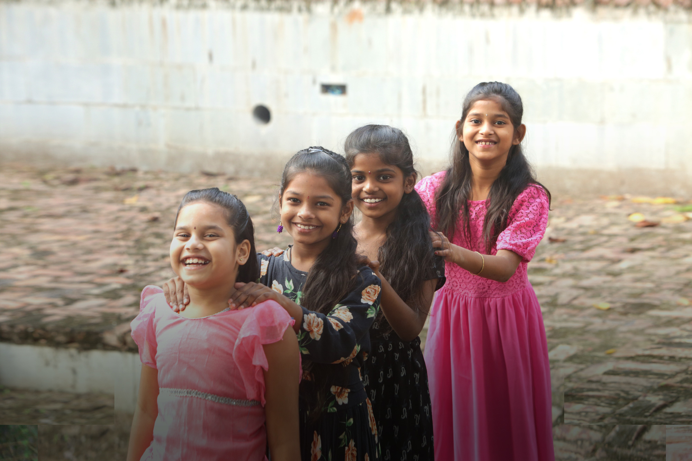
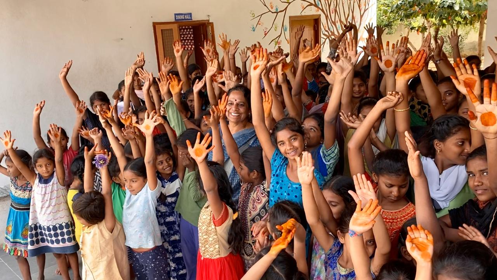

About Aarti
Helping girls and women realise their strength and potential.
The Beginning
A single act of compassion
"It was a hot summer day in Kadapa in 1992 when I was horrified to find a 2-year-old girl abandoned on the street. Her father had left her to starve on the road after murdering her mother."— Sandhya Puchalapalli, Founder & Director
Shocked and moved by finding the infant, Sandhya's overwhelming concern led her and a few like-minded individuals to establish a home for abandoned children and those in need of care and protection. Housed in rented premises with 6 children, the initiative was registered as the Vijay Foundation Trust (Association).
By 1996, the number of children had grown to 36 and they moved to Aarti Home, named after Sandhya's niece Aarti — their first donor — who tragically passed away at 18. Aarti Home grew in numbers and strength, and so did the resolve to address the deeper underlying societal issues.
Today, 30+ years later, Aarti has expanded into an umbrella organisation working towards the upliftment of girls and women. The Aarti way of life — helping girls and women realise their strength and potential.

Our Journey
From Inception to Now
Foundation
Sandhya Puchalapalli finds an abandoned toddler and, with a small group of volunteers, registers the Vijay Foundation Trust Association with 6 children in rented premises.
Aarti Home Opens
Growing to 36 children, the organisation moves to its own premises — named Aarti Home in memory of Sandhya's niece and first donor.
Aarti School Established
Recognising education as the key to breaking cycles of poverty, Aarti English Medium School opens its doors to children in the community.
Aarti Women's Centre Launched
Expanding beyond children, the Centre begins offering vocational training and empowerment programs for women in Kadapa.
Manabidda Project
Large-scale outreach project begins, educating women on rights, health, and gender equality across villages, schools, and colleges.
Aarti Village Campus
A 2.5-acre green campus takes shape — a net-zero, solar-powered village where children live in small family units guided by house mothers.
COVID Response
Aarti provides crisis support to 83 families during the pandemic and pivots to online volunteering and remote learning to keep the mission alive.
30+ Years & Growing
Over 6,430 girls provided permanent homes, 68,000+ women empowered, and advocacy reaching nearly 4 lakh women across India.
In the Media
Our founder featured in BBC's Documentary
Sandhya Puchalapalli and the work of Aarti For Girls have been recognised internationally, including in a BBC documentary on the impact of grassroots NGOs in India.